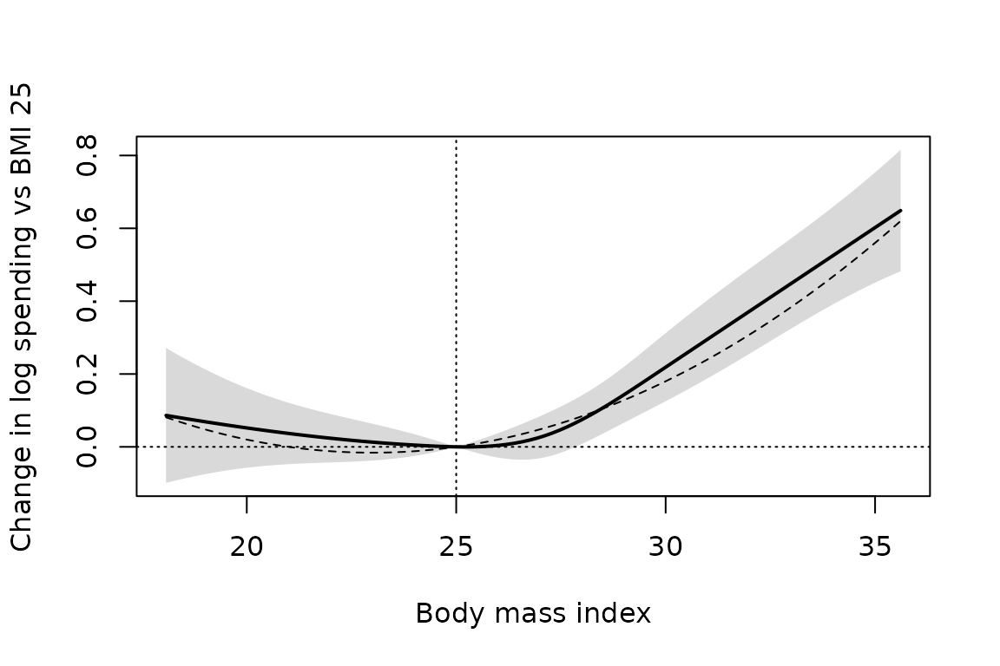

Technical reference: models, estimators and inference
Source:vignettes/panglm-methods.Rmd
panglm-methods.RmdThis vignette is the technical reference of panglm. It
states the models, the estimating equations and the covariance
estimators, lists the established implementations each estimator is
validated against, and defines the scope of the package. Worked examples
are in the task vignettes:
| Topic | Vignette |
|---|---|
| Data layout, pooled, within, between, random and correlated random effects, standard errors, partial effects, tables | vignette("panglm-intro") |
| Counts, hurdle, two-part costs, beta, ordered and tobit models | vignette("panglm-outcomes") |
| Instrumental variables, Hausman-Taylor, dynamic GMM, sample selection | vignette("panglm-endogeneity") |
| Difference-in-differences, event studies, staggered adoption | vignette("panglm-policy") |
| Random slopes, latent classes, quantile regression | vignette("panglm-heterogeneity") |
The numerical routines use Rcpp, RcppArmadillo and RcppParallel.
Notation and data organization
Let be the response of unit at occasion , and a vector of covariates. The conditional mean is linked to a linear predictor by
where
is an individual effect and
an optional time effect. index names the individual and
time variables. model sets how
is treated:
-
"pooling"omits ; -
"within"treats as a fixed nuisance parameter; -
"between"regresses individual means on individual means; -
"random"gives a distribution and integrates it out.
effect = "twoways" adds the time effects to supported
fixed-effects models.
Model matrices follow the usual R formula rules. Before estimation
the rank is checked after the transformation of the requested estimator;
unidentified columns, such as time-invariant regressors in a within
model, are reported and dropped. Missing responses or covariates follow
na.action; missing or duplicated index pairs are errors.
Nonzero offsets are rejected. Observation weights are accepted by pooled
models and, when constant within individuals, by random-effects
models.
Linear estimators
Pooled. Least squares, or iteratively reweighted least squares (IRLS) for generalized linear models. The negative binomial model uses the NB2 variance and alternates coefficient updates with the estimation of . With prior weights the score is ; zero weights remove an observation from the fit, the likelihood and the degrees of freedom. Robust and cluster covariances use the weighted scores and treat the weights as known, which is the usual inverse probability weighting for attrition.
Within. The one-way estimator is least squares on
and
.
With effect = "twoways" alternating projections remove both
individual and time means, which also handles unbalanced panels.
Between. Least squares on the individual means, , one row per individual. Its HC1 covariance equals the cluster covariance because each individual contributes one row.
Random effects. The Gaussian model is the Swamy and
Arora (1972) feasible GLS estimator: with
it regresses
on
,
with variance components from the within and between residuals. In a
balanced panel
with
the residual variance of the between regression. In an unbalanced panel
the between regression weights each individual by
and the variance components solve the trace-based moment equations of
plm (random.method = "swar"), which reduce to
the balanced ones when all
are equal. A negative
is set to zero with a warning. With weights, or with random slopes, the
Gaussian model is fitted by maximum likelihood instead.
Nonlinear fixed effects
Poisson. For one-way models the individual intercept has the closed-form profile solution , with and . Substitution gives the conditional Poisson estimator (Hausman, Hall and Griliches 1984), which is consistent for fixed when the conditional mean is correct. Two-way models use an outer IRLS loop with weighted alternating projections (Guimaraes and Portugal 2010).
Negative binomial. The one-way NB2 model estimates the slopes, one intercept per individual and jointly (Allison and Waterman 2002); all-zero groups are dropped with a message. It is not the conditional negative binomial model of Hausman, Hall and Griliches (1984), whose scale restriction does not remove an individual intercept. Dummy intercepts do not remove the finite- incidental parameter bias in general, so short panels call for caution.
Gamma. With the gamma log-link estimator with one intercept per individual is consistent for fixed under strict exogeneity, because its concentrated score has mean zero, as for the Poisson model. The log-link working weights are constant, so each IRLS step is a within regression.
Binomial. The one-way model is the exact conditional logit (Chamberlain 1980). Given , unit contributes
evaluated with its score by a forward and backward recursion. Units
with all-zero or all-one responses carry no information and are dropped.
The likelihood is maximized by Newton-Raphson; the gradient and Hessian
are exact, from the derivatives of the same recursion (the algorithm of
survival::clogit(method = "exact")), and the inverse of
that Hessian is the classical covariance. With
effect = "twoways" the individual effects are conditioned
out and time effects enter as dummies.
Ordered logit. model = "within" fits
the blow-up and cluster estimator of Baetschmann, Staub and Winkelmann
(2015): each observation is copied once per cutoff, dichotomized at that
cutoff, and a conditional logit is fitted to the stacked data with
standard errors clustered by individual.
Random-intercept likelihoods
Random-effects models integrate over :
| Family | Mixing distribution | Integration |
|---|---|---|
| Gaussian | normal | closed form (FGLS or ML) |
| Poisson | gamma | closed form (negative binomial marginal) |
| Negative binomial | beta on the NB2 probability | closed form (Hausman, Hall and Griliches 1984) |
| Binomial (logit, probit) | normal on the link scale | adaptive Gauss-Hermite quadrature |
| Gamma, ordered, beta, tobit | normal on the link scale | adaptive Gauss-Hermite quadrature |
R sets the number of quadrature nodes (default 21).
Adaptive quadrature centres the nodes at each individual’s mode and
scales them by the curvature there, so R = 1 is the Laplace
approximation (the beta model scales by the expected curvature). For the
binomial and ordered models the gradient is exact, including the
dependence of the mode and the curvature on the parameters, and the
default R = 21 reproduces
lme4::glmer(nAGQ = 21) and
ordinal::clmm(nAGQ = 21) to about 1e-5. A probit model with
a large random-intercept spread needs more nodes for that accuracy: on
pglm::UnionWage
()
21 nodes leave an error of about 1e-3 in the log-likelihood, and 41 or
more remove it. R is ignored by the closed-form Gaussian,
Poisson and negative binomial random-intercept models. Response
predictions are marginal over
;
for the gamma model this includes the lognormal factor
.
Covariances use the observed information, and
vcov = "cluster" gives the sandwich built from the
individual scores of the integrated likelihood. With weights constant
within individuals the weighted sum of the individual log-likelihoods is
maximized and the cluster covariance is design based.
Correlated random effects. cre = TRUE
adds the individual means of the time-varying regressors,
(Mundlak 1978; Chamberlain 1980), as
mean_<variable> columns. In linear models the
coefficients on
then equal the within estimates. The summary reports the Wald test of
,
the regression form of the Hausman test.
Dynamic models. dynamic = TRUE applies
the initial-conditions solution of Wooldridge (2005): it adds the lagged
outcome lag_<y>, the first observed outcome
initial_<y> and the individual means of the
time-varying regressors, and drops the first wave. The coefficient on
lag_<y> measures state dependence.
Random slopes
random = ~ z gives the model
,
with
the intercept and the listed variables and
,
unstructured (Laird and Ware 1982). The Gaussian model is fitted by
exact maximum likelihood. Poisson, negative binomial, gamma and binomial
(logit or probit) models use adaptive Gauss-Hermite quadrature on a
product grid of
nodes, with
the dimension of
;
the cost therefore grows quickly with
.
is parametrized by its Cholesky factor. The fit stores
in varcomp and the predicted effects (posterior modes, the
BLUPs in the Gaussian case) in ranef.
Outcome-specific models
Ordered. orderedfamily("logit") or
orderedfamily("probit"):
,
with the intercept absorbed in the cutpoints
.
Pooled and random-intercept fits for both links; the fixed-effects model
above for the logit link.
Beta. betafamily():
with
,
so
(Ferrari and Cribari-Neto 2004). The precision is
fit$precision. Responses of exactly 0 or 1 must first be
moved inside the interval (Smithson and Verkuilen 2006). Regressors
should be on a moderate scale.
Tobit. tobitfamily(left, right): a
latent
,
,
is observed as
(Tobin 1958). Censored observations contribute
or
,
the others the normal density. Pooled and random-intercept models; the
random intercept SD is fit$sigma and the error SD
fit$sigma_e.
Two-part. twopart() fits the model of
Duan et al. (1983),
,
with a probit or logit first part and a gamma (log link) or lognormal
positive part, pooled or with random intercepts, optionally with
cre = TRUE. The lognormal retransformation uses Duan’s
smearing factor (default) or
.
With correlated = TRUE and a lognormal positive part, the
two random intercepts are bivariate normal with correlation
and both parts are fitted jointly (Van Ourti 2004). The positive part
integrates in closed form given
,
and the integral over
uses adaptive quadrature. The marginal mean is then
Hurdle. panhurdle() fits two
fixed-effects parts: a conditional logit for
and a zero-truncated Poisson or NB2 model for the positive counts, with
density
for
and one intercept per individual.
Endogenous regressors
Two-stage least squares. paniv() takes
y ~ regressors | instruments, where the second part is the
full instrument set. With
the within, quasi-demeaned or untransformed version of a variable and
,
model = "within" and "pooling" give
fixed-effects and pooled 2SLS. model = "random" gives the
generalized 2SLS of Balestra and Varadharajan-Krishnakumar
(inst.method = "bvk") or the EC2SLS of Baltagi (1981)
("baltagi", instruments
),
with variance components from within and between 2SLS residuals. The
summary reports the first-stage partial
and
of the excluded instruments, and a Sargan test (or a cluster-robust
Hansen
)
when overidentified.
Hausman-Taylor. model = "hausmantaylor"
(Hausman and Taylor 1981) splits the regressors into time-varying and
time-invariant, exogenous and endogenous with respect to
.
The second formula part lists the exogenous ones. The within-transformed
time-varying regressors and the exogenous time-varying means and
time-invariant regressors are the instruments, so the exogenous
time-varying regressors must be at least as many as the endogenous
time-invariant ones.
Dynamic GMM. pangmm() fits
. The difference
estimator of Arellano and Bond (1991) uses
for
;
the system estimator of Blundell and Bond (1998)
(transformation = "ld") adds
.
collapse = TRUE and maxlag limit the
instrument count. The two-step covariance uses the Windmeijer (2005)
correction. Reported tests: Arellano-Bond AR(1) and AR(2), Sargan and
Hansen.
Sample selection. panselect()
implements Wooldridge (1995). A probit for selection is fitted in each
period, with the individual means of the selection regressors
(mundlak = TRUE). The inverse Mills ratio, interacted with
period dummies (lambda = "period") or common
("common"), enters the outcome equation, estimated by fixed
effects or pooled OLS. The joint test of the Mills ratio terms is the
test of selection bias; it is valid with the cluster covariance under
the null. Coefficient standard errors come from a cluster bootstrap over
both steps (boot replicates).
Policy evaluation
Two-way fixed effects. did() fits
, with
and
the first treated period. Gaussian, Poisson, negative binomial and
conditional logit fits are available. Poisson TWFE needs only the
conditional mean to be correct (Wooldridge 2023).
eventstudy() replaces
with indicators of event time
from -leads to lags, reference
ref = -1, with the end points binned by default. Its Wald
test of the leads is the pre-trend test. Under staggered adoption with
heterogeneous effects the TWFE coefficient is a weighted average of
two-by-two comparisons with possibly negative weights (Goodman-Bacon
2021; Sun and Abraham 2021).
Group-time effects. attgt() estimates,
for each cohort
and period
,
with base period
(moved back by anticipation) and comparison group
never or not yet treated (Callaway and Sant’Anna 2021). Pre-treatment
ATT
use the previous period as base (base = "varying") or
(base = "universal"). With covariates the comparison is
outcome regression, inverse probability weighting or the doubly robust
combination (Sant’Anna and Zhao 2020). Aggregations
(summary(type = "simple", "dynamic", "group", "calendar"))
weight the
ATT
by cohort size. Standard errors come from the influence functions, or
from the multiplier bootstrap (bstrap,
biters), which allows a coarser cluster and
uniform bands (cband).
Extended TWFE. etwfe() (Wooldridge
2021, 2023) fits one pooled regression with cohort and period effects
and a treatment indicator for every treated cohort by post-period cell;
covariates enter centred at their cohort means and interacted with the
cells. In the linear case the cell coefficients equal the imputation
estimates of
ATT.
With family = "poisson" or "binomial" parallel
trends holds on the link scale and the effects are averaged on the
response scale with delta-method standard errors. xvar
gives effects by a covariate; ivar = TRUE uses unit instead
of cohort effects (linear only).
Finite mixtures
panfmm() assumes each individual belongs to one of
latent classes for all its observations, so the likelihood contribution
is
with Gaussian, Poisson, NB2 or binomial components (Deb and Trivedi
1997, 2002) and individual-level concomitant variables
(concomitant). EM is run from nstart random
starts and the best fit kept; the covariance is the inverse observed
information of the full likelihood, or its cluster sandwich.
panfmmselect() compares
by AIC and BIC. predict(type = "posterior") returns the
posterior class probabilities.
Quantile regression
panqr() assumes
with
location-shift individual effects.
-
"canay"(Canay 2011): from the within regression, thenquantregregression of on . Consistent as and grow. Analytic or cluster bootstrap standard errors. -
"mmqr"(Machado and Santos Silva 2019): the location-scale model , estimated by two within regressions and the -quantile of the standardized residuals, so . Analytic covariance as in their paper. -
"pooling":quantregregression ignoring , with a cluster-robust covariance.
Regression splines
Any formula term works, including splines::ns(x, df),
splines::bs(x, df) and poly(x, degree). Basis
columns are demeaned like any regressor in fixed-effects fits, and the
knots of the estimation sample are reused by predict() and
model.matrix().
-
lineartest(fit, "x"): the spline basis contains the linear function, , so linearity means the spline coefficients are proportional to ; the test is the joint Wald test of the implied restrictions, with any covariance type. -
jointtest(fit, pattern = "x"): Wald test that all columns ofxare zero. -
effectcurve(fit, "x", ref): change in the linear predictor fromrefto a grid of values, with delta-method pointwise limits.
set.seed(2026)
N <- 150; TT <- 5
sim <- data.frame(id = rep(seq_len(N), each = TT), year = rep(seq_len(TT), N))
alpha <- rnorm(N)
sim$bmi <- 27 + 3 * alpha[sim$id] + rnorm(N * TT, sd = 2.5)
sim$logcost <- 6 + alpha[sim$id] + 0.004 * (sim$bmi - 23)^2 +
rnorm(N * TT, sd = 0.4)
fit_spline <- panglm(logcost ~ splines::ns(bmi, 4), data = sim,
index = c("id", "year"), model = "within",
vcov = "cluster")
lineartest(fit_spline, "bmi")
#>
#> Joint Wald test (vcov: cluster)
#> H0: the effect of bmi is linear
#> Chi-squared = 28.93, df = 3, p-value = 2.316e-06
plot(effectcurve(fit_spline, "bmi", ref = 25), xlab = "Body mass index",
ylab = "Change in log spending vs BMI 25")
curve(0.004 * (x - 23)^2 - 0.004 * (25 - 23)^2, add = TRUE, lty = 2)
A likelihood ratio test of nested fixed-effects fits is biased upwards here: the dummy-variable error variance divides the residual sum of squares by instead of , which inflates the statistic by about . The Wald form is preferred.
Average partial effects
partialeffects() averages
over the sample for continuous regressors, and the discrete change for
binary and factor regressors, with delta-method standard errors from the
stored covariance. For random-effects models the mean integrates over
,
the average structural function of Wooldridge (2005); in correlated
random effects fits the individual means are held fixed. Ordered models
give one effect per category; two-part models give effects on either
part or on the unconditional mean.
Covariance estimation
The default covariance is model based. With the inverse information and the score contributions, the sandwich is
"HC1" uses observation scores; "cluster"
sums them within clusters first, the individual by default or a coarser
cluster variable. Linear models use the finite-sample
factor
of plm::vcovHC(type = "sss"). For the conditional logit the
independent contribution is a whole stratum, so HC1 uses stratum scores
and a custom cluster may combine but not split strata. For
random-effects models the scores are those of the individual integrated
likelihoods.
fit_fe <- panglm(fev1 ~ crp, data = copd, index = c("id", "visit"),
model = "within")
sqrt(c(classical = vcov(fit_fe), HC1 = vcov(fit_fe, type = "HC1"),
cluster = vcov(fit_fe, type = "cluster")))
#> classical HC1 cluster
#> 0.005974855 0.005293113 0.006071829panhausman() compares compatible fixed- and
random-effects fits with the covariance difference, or in its Mundlak
form with any covariance. pandispersiontest() reports the
Pearson statistic over its residual degrees of freedom for count
fits.
Likelihoods and information criteria
logLik(), AIC() and BIC()
count the estimated shape, dispersion, variance and absorbed
fixed-effect parameters that belong to the reported likelihood. Gaussian
within fits report the dummy-variable normal likelihood, and Swamy-Arora
fits the exact (not REML) normal random-intercept likelihood at the FGLS
estimates. Conditional Poisson and conditional logit likelihoods count
only the parameters left after conditioning. Information criteria
compare models of the same response fitted on the same observations;
they do not compare a conditional with an unconditional likelihood.
Predictions
fitted() and in-sample predict() follow the
original row order. Random-effects predictions are marginal over the
latent effects. Fixed-effects predictions for new data add the estimated
effects of known units; unseen units are errors unless
allow.new.levels = TRUE, which sets their effect to zero.
For the conditional logit, in-sample fitted values are conditional on
each unit’s success total, and new-data probabilities are not
identified.
Computational validation
The test suite (tests/testthat) and the scripts in
validation/ compare each estimator with an established
implementation of the same model:
| Estimator | Reference implementation |
|---|---|
| Pooled GLMs, pooled NB2 |
stats::glm(), MASS::glm.nb()
|
| Gaussian pooled, within, between, random; HC1 and cluster covariances |
plm::plm(), plm::vcovHC(),
sandwich
|
| Fixed-effects Poisson and NB2, two-way counts |
fixest, pglm
|
| Conditional logit, fixed-effects ordered logit | survival::clogit() |
| Random-effects Poisson, NB, binomial |
pglm, lme4
|
| Random-effects gamma, beta, ordered |
glmmTMB, betareg,
ordinal::clmm(), MASS::polr()
|
| Tobit |
AER::tobit(), censReg
|
| Hurdle count part | pscl::hurdle() |
| Random slopes |
lme4::lmer(), lme4::glmer(),
glmmTMB, GLMMadaptive
|
| IV, Hausman-Taylor |
plm::plm(), plm::pht(),
AER::ivreg(), fixest::feols()
|
| Difference and system GMM | plm::pgmm() |
| Selection |
stats::glm(), plm, sandwich,
sampleSelection::heckit() (one period) |
| TWFE DiD and event study |
fixest::feols(), survival::clogit()
|
| Group-time ATT and aggregations |
did::att_gt(), did::aggte()
|
| Extended TWFE |
etwfe::etwfe(), etwfe::emfx()
|
| Finite mixtures | flexmix |
| Quantile regression |
quantreg::rq(); MM-QR moment conditions as Stata
xtqreg
|
| Average partial effects | marginaleffects |
Model scope
- Families: Gaussian, Poisson, binomial (logit, probit), NB2, gamma, ordered logit and probit, beta and tobit; two-part and hurdle models for zeros.
- Fixed effects: Gaussian, Poisson, NB2, gamma, conditional logit and ordered logit. There is no fixed-effects estimator for the probit, ordered probit, beta and tobit models.
- Random effects: every family; random slopes for Gaussian, Poisson, NB2, gamma and binomial models.
- Linear only: instrumental variables (
paniv()), GMM (pangmm()), selection (panselect()) and quantile regression (panqr()). - Policy:
did()andeventstudy()for Gaussian, count and binary outcomes;attgt()for continuous outcomes;etwfe()for Gaussian, Poisson and binary outcomes.
These restrictions keep unlike estimators from being presented under a common option.
References
Allison, P. D., and Waterman, R. P. (2002). Fixed-effects negative binomial regression models. Sociological Methodology, 32, 247-265.
Arellano, M., and Bond, S. (1991). Some tests of specification for panel data. Review of Economic Studies, 58, 277-297.
Baetschmann, G., Staub, K. E., and Winkelmann, R. (2015). Consistent estimation of the fixed effects ordered logit model. Journal of the Royal Statistical Society A, 178, 685-703.
Baltagi, B. H. (1981). Simultaneous equations with error components. Journal of Econometrics, 17, 189-200.
Blundell, R., and Bond, S. (1998). Initial conditions and moment restrictions in dynamic panel data models. Journal of Econometrics, 87, 115-143.
Callaway, B., and Sant’Anna, P. H. C. (2021). Difference-in-differences with multiple time periods. Journal of Econometrics, 225, 200-230.
Canay, I. A. (2011). A simple approach to quantile regression for panel data. The Econometrics Journal, 14, 368-386.
Chamberlain, G. (1980). Analysis of covariance with qualitative data. Review of Economic Studies, 47, 225-238.
Deb, P., and Trivedi, P. K. (1997). Demand for medical care by the elderly: a finite mixture approach. Journal of Applied Econometrics, 12, 313-336.
Deb, P., and Trivedi, P. K. (2002). The structure of demand for health care: latent class versus two-part models. Journal of Health Economics, 21, 601-625.
Duan, N., Manning, W. G., Morris, C. N., and Newhouse, J. P. (1983). A comparison of alternative models for the demand for medical care. Journal of Business and Economic Statistics, 1, 115-126.
Ferrari, S., and Cribari-Neto, F. (2004). Beta regression for modelling rates and proportions. Journal of Applied Statistics, 31, 799-815.
Goodman-Bacon, A. (2021). Difference-in-differences with variation in treatment timing. Journal of Econometrics, 225, 254-277.
Guimaraes, P., and Portugal, P. (2010). A simple feasible procedure to fit models with high-dimensional fixed effects. Stata Journal, 10, 628-649.
Hausman, J., Hall, B. H., and Griliches, Z. (1984). Econometric models for count data with an application to the patents-R&D relationship. Econometrica, 52, 909-938.
Hausman, J. A., and Taylor, W. E. (1981). Panel data and unobservable individual effects. Econometrica, 49, 1377-1398.
Laird, N. M., and Ware, J. H. (1982). Random-effects models for longitudinal data. Biometrics, 38, 963-974.
Machado, J. A. F., and Santos Silva, J. M. C. (2019). Quantiles via moments. Journal of Econometrics, 213, 145-173.
Mundlak, Y. (1978). On the pooling of time series and cross section data. Econometrica, 46, 69-85.
Sant’Anna, P. H. C., and Zhao, J. (2020). Doubly robust difference-in-differences estimators. Journal of Econometrics, 219, 101-122.
Smithson, M., and Verkuilen, J. (2006). A better lemon squeezer? Maximum-likelihood regression with beta-distributed dependent variables. Psychological Methods, 11, 54-71.
Sun, L., and Abraham, S. (2021). Estimating dynamic treatment effects in event studies with heterogeneous treatment effects. Journal of Econometrics, 225, 175-199.
Swamy, P. A. V. B., and Arora, S. S. (1972). The exact finite sample properties of the estimators of coefficients in the error components regression models. Econometrica, 40, 261-275.
Tobin, J. (1958). Estimation of relationships for limited dependent variables. Econometrica, 26, 24-36.
Van Ourti, T. (2004). Measuring horizontal inequity in Belgian health care using a Gaussian random effects two part count data model. Health Economics, 13, 705-724.
Windmeijer, F. (2005). A finite sample correction for the variance of linear efficient two-step GMM estimators. Journal of Econometrics, 126, 25-51.
Wooldridge, J. M. (1995). Selection corrections for panel data models under conditional mean independence assumptions. Journal of Econometrics, 68, 115-132.
Wooldridge, J. M. (2005). Unobserved heterogeneity and estimation of average partial effects. In D. W. K. Andrews and J. H. Stock (Eds.), Identification and Inference for Econometric Models, 27-55. Cambridge University Press.
Wooldridge, J. M. (2021). Two-way fixed effects, the two-way Mundlak regression, and difference-in-differences estimators. Working paper, SSRN 3906345.
Wooldridge, J. M. (2023). Simple approaches to nonlinear difference-in-differences with panel data. The Econometrics Journal, 26, C31-C66.